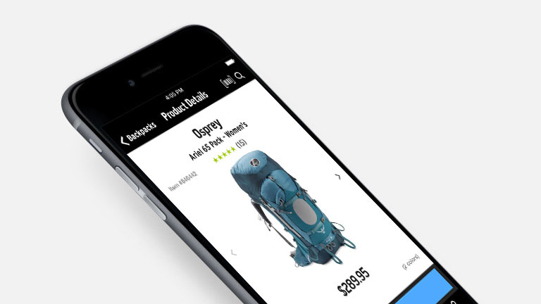

REI Online Backpack Purchasing Experience
Redesigning REI's website to improve novice backpackers' pack purchasing experience

Overview
Objective
Purchasing the right multi-day backpack can be a time-consuming and daunting experience for novice backpackers. A single mistake during the purchase might end up affecting the health and even safety of the backpacker during an extended trip in wilderness.
We redesigned REI's website to provide more detailed guidance and support for novice backpackers to find the backpack of the right size, capacity, and features without having to travel to an REI store.
My Role
UX Researcher, UX Designer
Timeline
Sept. 2017 - Dec. 2017
Team Members
Tony Jin, Xinyi Chen, Lindsay Kelly, Brianna Pritchett, Xue Zhao
Tools
Qualtrics, Sketch
Methods
We focused most of our time on user research and evaluation in this project. We started by visiting REI physical stores and analyzing its website and apps through task analysis to identify potential problems. We pivoted several times based on our research, and decided to focus on REI's website. We then conducted contextual inquiries, detailed online surveys, and expert interviews to identify specific pain points related to the backpack purchasing process on REI's website. We also conducted market research and analyzed customer's questions in the Q&A section of REI's product pages. Based on our research, we came up with three concepts, and narrowed them down based on users' feedback...
My Contribution
During the initial research phase, I was in charge of contacting local REI stores for interview permission. After the first store declined our request, my perseverance helped us discover alternative choices, which led to more opportunities to interview customers/salespeople in store and in REI's backpacking classes. I visited two different REI stores multiple times for field observation and interviews, and conducted a task analysis based on my interaction with salespeople in store. I conducted several contextual inquiries, and was responsible for designing and distributing a detailed online survey, which yielded hundreds of responses with rich qualitative data. I then analyzed the survey data and helped create affinity diagrams for interview/contextual inquiry data. I also created a customer journey map based on the data we gathered...
Process
Field Visits
We first visited a local REI store several times to understand the general store layout, observe people's purchasing process, and identify the need we hope to address. We pivoted from focusing on tents to focusing on backpacks because there was generally a higher demand for help in the backpack area. I took the lead to come up with a scenario in which I needed to buy a multi-day backpacking pack for a 3-day trip in wilderness. I went through the entire backpack selection process in-store and interacted with salespeople with the objective dictated by the scenario in mind. The information gathered helped us create the task analysis for in-store backpack purchase.
During our visit, I also took the lead to talk with the store's manager for interview permissions. Though he had to decline our request, the manager pointed us to REI backpacking classes taught at another store, which graciously agreed to our interview request later.
Task Analysis
Interviews & Affinity Mapping
Detailed Online Survey
Contextual Inquiries
Review of Q&A on REI.com
Persona
Customer Journey Mapping
Design Alternatives